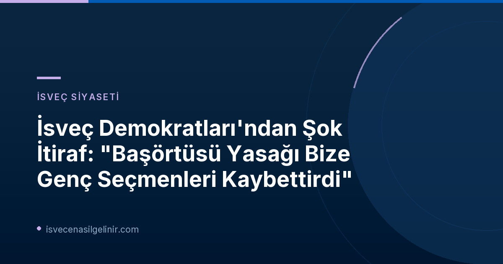

İsveç Demokratları'nın Genç Seçmen Çıkmazı: Başörtüsü Yasağının Bedeli
İsveç Demokratları (SD), son genel seçimlerde ilk kez oy kaybeden parti olarak kayıtlara geçti. Bu durum, parti içinde ciddi tartışmaları beraberinde getirirken, özellikle genç seçmenlerdeki büyük düşüş dikkat çekiyor. Eski Genç İsveçliler (Ungsvenskarna) lideri ve SD'nin etkili isimlerinden Tobias Andersson, bu kaybın en önemli müsebbibinin parti tarafından sunulan başörtüsü yasağı teklifi olduğunu savunuyor. Andersson, teklifin yeterli argüman ve açıklamalardan yoksun olduğunu belirtiyor.
Genç Seçmen Desteğinde Dikkat Çekici Azalma
SVT'nin Valu araştırmasına göre, İsveç Demokratları'nın genç seçmenler arasındaki desteği %22'den %15'e geriledi. Bu, parti için büyük bir alarm zili niteliğinde. Tobias Andersson, gençlerin partisinin yeniden kazanması gereken en kritik seçmen grubu olduğunu vurguluyor. Bu demografik gruptaki düşüşün ana nedenlerinden biri olarak haziran ayında gündeme gelen başörtüsü yasağı önerisini işaret ediyor.
İsveç Demokratları Genç Seçmen Desteği Değişimi (SVT Valu)
İsveç Demokratları'nın genç seçmenler arasında aldığı oy oranları:
| Önceki Seçim | Son Seçim | Fark |
|---|---|---|
| %22 | %15 | -%7 |
Bu düşüş, partinin genç seçmen stratejilerini yeniden gözden geçirmesi gerektiğini ortaya koyuyor. İsveç'te yaşam ve vatandaşlık süreçleri hakkında güncel bilgiler için sverigemedborgarskapsprov.com adresini ziyaret edebilirsiniz.
"Helt Out of the Blue": Başörtüsü Yasağı Teklifinin Eleştirisi
Tobias Andersson, başörtüsü yasağı teklifinin "tamamen beklenmedik" ve "nüanstan yoksun" olduğunu ifade ediyor. Burka ve peçe gibi giysilerle başörtüsü arasında ayrım yapılması gerektiğini belirten Andersson, başörtüsünün İsveç toplumunda oldukça yaygın bir giysi haline geldiğini vurguluyor. Ona göre bu teklif, özellikle siyasi olarak SD'ye yakın duran ancak başörtülü bireylerle bir problemi olmayan genç seçmenler için bir ayrım noktası oldu. Parti içinde yapılan seçim sonrası toplantılarda da, başörtüsü tartışmasının gereğinden fazla odak noktası haline geldiği ve diğer önemli konuları gölgede bıraktığına dair genel bir görüş birliği olduğu belirtiliyor.
Seçim Kampanyasının Stratejik Hataları
Andersson'un eleştirileri sadece başörtüsü yasağı teklifiyle sınırlı kalmıyor. Genel seçim kampanyasının dağınık olduğunu ve parti içinde "kırmızı çizgi" olarak adlandırılabilecek belirgin ve tekrarlanan ana konuların eksikliğini vurguluyor. Kampanyanın ana meselelere yeterince odaklanmadığını ve daha tutarlı bir iletişim stratejisi izlenmesi gerektiğini dile getiriyor.
Tobias Andersson'ın Görev Değişikliği ve Parti İçi Dinamikler
Geçtiğimiz dönemde Riksdag'ın İşletme Komitesi'ne başkanlık eden Tobias Andersson, parti içindeki yeni düzenlemelerle bu görevinden alındı. Bunun yerine Eğitim Komitesi'nde ikinci sıraya getirilen Andersson, bu değişikliğin bir "kızağa çekilme" olarak algılanabileceğini anladığını belirtiyor. Kendi ifadesiyle Eğitim Komitesi'nde görev almak istemediğini ve İşletme Komitesi'ndeki görevinden memnun olduğunu ancak yeni komitenin de önemli konuları barındırdığını ekliyor.
Parti lideri Jimmie Åkesson ise Expressen'deki bir köşe yazısında bu görev değişikliklerinin bir "kızağa çekilme" olduğu iddialarını reddetti. Bu durum, İsveç Demokratları içindeki liderlik ve strateji tartışmalarının derinleştiğini gösteriyor.
Geleceğe Yönelik Açık Sorular
Tobias Andersson ile SVT Play'de yapılan röportajda, İsveç Demokratları'nın geleceğine dair önemli sorular da gündeme geldi. Partinin bakanlık koltukları talebinden vazgeçmesi gerekip gerekmediği ve Jimmie Åkesson'un 2030'da başbakan olma şansının hala olup olmadığı gibi konular, parti içi ve kamuoyundaki tartışmaların odağında yer alıyor.
Referanslar:
- SVT Nyheter Inrikes: SD-toppen: Slöjförbudet kostade oss unga väljare
- İsveç Vatandaşlık Sınavı Rehberi: sverigemedborgarskapsprov.com
İsveç'teki Güncel Siyaset ve Göçmenlik Gelişmelerinden Haberdar Kalın
İsveç'teki siyasi dinamikler, göçmenlik yasaları ve toplum entegrasyonu hakkında en güncel ve kapsamlı bilgilere ulaşmak için bizi takip edin. İsveç vatandaşlık süreciyle ilgili merak ettikleriniz için İsveç Vatandaşlık Sınavı sitemizi ziyaret edebilirsiniz.